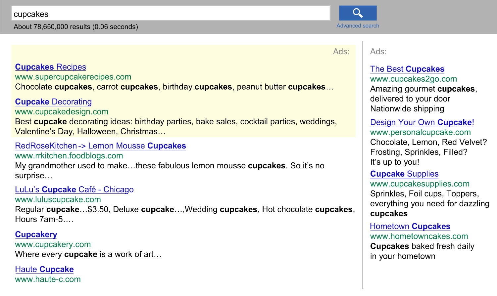

Online media has developed rapidly, with technology advancing at a rate that often surpasses the ability of legislation and policy to keep up with it. As a result, issues like individuals’ rights to privacy, copyright protections, and fair use restrictions have become the subject of numerous court cases and public debates as lawmakers, judges, and civil liberties organizations struggle to define the limits of technology and the access it provides to previously restricted information. In the following section you will look at some of the most prominent issues in today’s online media environment. We have already considered some of the legal questions surrounding these issues. Here, you should reflect on the ethical issues in mass media raised in the two preceding sections and how they are manifested in the areas of personal privacy, copyright law, and plagiarism.
Concerns about online privacy issues in recent years have led some people to wonder whether the collection of personal information on websites has begun to infringe on individuals’ constitutional rights. While the U.S. Constitution does not explicitly guarantee a general right to privacy, the Bill of Rights establishes privacy of beliefs, privacy of the home, and privacy of person and possessions from unreasonable searches. Additionally, in a number of court cases, the “right to liberty” clause has also been read as a guarantee of personal privacy.Doug Linder, “The Right of Privacy,” Exploring Constitutional Law, 2010, http://www.law.umkc.edu/faculty/projects/ftrials/conlaw/rightofprivacy.html. What do these constitutional rights mean when it comes to storing a person’s credit card data online, or tracking his or her Internet searches, or using cookies to collect information about his or her purchasing habits? Because online media is developing so rapidly, many of these issues have not been settled by federal legislation and remain the source of numerous courtroom battles. Consider the 2010 case in which the online services company Yahoo! entered into a legal struggle with government officials who wanted to search the email account of a Yahoo! user for incriminating evidence. While Yahoo! claimed the government would need a search warrant to access a user’s email, the government investigators claimed the Fourth Amendment does not apply in the case of an email account.Electronic Frontier Foundation, “EFF Backs Yahoo! to Protect User from Warrantless Email Search,” news release, April 14, 2010, http://www.eff.org/press/archives/2010/04/13. Many college students reveal much about themselves on Facebook; they sometimes are chagrined to learn that future employers sometimes will view this information.
In defense of information collection and surveillance, many websites argue that, by using their services, individuals are agreeing to make their personal information available. However, many people don’t realize the extent of surveillance capabilities or know how to protect certain personal information while using online tools. The more people rely on the Internet for shopping, communication, social networking, and media consumption, the more their personal data is stored online. Every time a person subscribes to a magazine, joins an organization, donates money to charity, gives to a political cause, or searches the pages of a government agency, that information is stored in a computer.Privacy Rights Clearinghouse, “Privacy Today: A Review of Current Issues,” March 2010, http://www.privacyrights.org/ar/Privacy-IssuesList.htm#publicrecords. For example, cookiesText files that web page servers embed in users’ hard drives to help search engines keep track of their customers’ search histories, buying habits, and browsing patterns., text files that web page servers embed in users’ hard drives, help search engines like Google and Yahoo! track their customers’ search histories, buying habits, and browsing patterns. Cookies stored by Google last for 30 years.Maria Godoy, “Google Records Subpoena Raises Privacy Fears,” NPR, January 20, 2006, http://www.npr.org/templates/story/story.php?storyId=5165854. These search engine cookies are used to customize users’ searches and to deliver customized third-party ads based on a particular user’s demographics and behavior. However, privacy advocates claim this practice fosters predatory advertising.Tom Spring, “Good-Bye to Privacy?” PC World, May 23, 2010, http://www.pcworld.com/article/196787/goodbye_to_privacy.html. Additionally, considering that search engines receive multiple requests per day for specific information on their users (requests that are often tied to criminal investigations and lawsuits), there is a growing concern that unfair or even erroneous profiling may result.Maria Godoy, “Google Records Subpoena Raises Privacy Fears,” NPR, January 20, 2006, http://www.npr.org/templates/story/story.php?storyId=5165854. Much of this information is stored without users’ knowledge or informed consent—although agreements for most software inform users when their data is being collected, few people have the patience or time to read and understand the dense legalistic language of these agreements. And even when users invest the time and effort to understand the agreements, they are left with the difficult choice of either agreeing to have their data recorded or going without useful software.
Internet users concerned about their privacy may also be unaware of another growing trend: the combination of online data with offline information to build profiles of web surfers. Data providers like BlueKai, Datalogic, and Nielsen are now able to pool offline data and demographics to create “digital dossiers” (detailed digital records of a particular subject or market) for online advertisers who want to reach a target market.Tom Spring, “Good-Bye to Privacy?” PC World, May 23, 2010, http://www.pcworld.com/article/196787/goodbye_to_privacy.html. This combination of online and offline information provides a nearly complete picture of someone’s life. If advertisers are looking for a 56-year-old retired female educator who is divorced, owns a home and a dog, suffers from arthritis, and plays tennis at the local fitness club, they can now find her. While advertisers have been careful to point out that people are identified by demographic subgroup but never by name, many organizations that advocate for privacy, such as the Electronic Frontier Foundation, believe that protections and greater transparency should be enforced.Tom Spring, “Good-Bye to Privacy?” PC World, May 23, 2010, http://www.pcworld.com/article/196787/goodbye_to_privacy.html.
Figure 14.7
Online ads like these target users based on pools of very specific information.
Users also supply a wide range of information about themselves through online social networks that is connected with their names, contact information, and photographs. Creditors now look at individuals’ social networks to determine whether they would be good credit customers, and banks may access social network information to make loan decisions.Ginny Mies, “Skeptical Shopper: Can Your Online Life Ruin Your Credit?” PC World, March 23, 2010,. http://www.pcworld.com/article/192207/skeptical_shopper_can_your_online_life_ruin_your_credit.html. If users aren’t careful about their privacy settings on MySpace, Twitter, or Facebook, photographs and other private information may be easily accessible to anyone performing a Google search. Of even greater concern is the growing trend to publicize information that was previously private as the networking sites evolve and change their interfaces.
Surveillance can range from the monitoring of online activity by employers and other institutions that want to make sure users are following guidelines, to high-level government investigations of terrorist activity. The USA PATRIOT Act, passed just 6 weeks after the September 11, 2001, terrorist attacks, expanded the federal government’s rights to access citizens’ personal information. Under the Patriot Act, authorities have access to personal records held by Internet service providers and other third parties, and government officials can tap in to an individual’s email communications and web searches if he or she is suspected of terrorist activity or of having connections to terrorist activity.American Civil Liberties Union, “Surveillance Under the USA PATRIOT Act,” April 3, 2003, http://www.aclu.org/national-security/surveillance-under-usa-patriot-act; Stefanie Olsen, “Patriot Act Draws Privacy Concerns,” CNET, October 26, 2001, http://news.cnet.com/2100-1023-275026.html. One concern among civil liberties organizations is that the Patriot Act might become a back door for the government to conduct undisclosed surveillance that doesn’t necessarily involve the threat of terrorism. For instance, under the Patriot Act the government can wiretap Internet communications even if the primary purpose is a criminal investigation, as long as intelligence gathering is a significant purpose of the investigation.Berkman Center for Internet and Society, “The USA Patriot Act, Foreign Intelligence Surveillance, and Cyberspace Privacy,” Harvard Law School, http://cyber.law.harvard.edu/privacy/module5.html.
Now that a large amount of research can easily be conducted online, and content can be copied and pasted from one platform to another with no more than the click of a button, concerns about plagiarism and copyright infringement are more relevant than ever. The concepts of copyright infringement and plagiarism can easily be confused with each another. The following provides an overview of copyright, its issues and limitations, and its distinction from plagiarism.
CopyrightA form of protection provided by U.S. law, under which the creator of an original artistic or intellectual work is automatically granted certain rights, including the right to distribute, copy, and modify the work. is a form of protection provided by U.S. law, under which the creator of an original artistic or intellectual work is automatically granted certain rights, including the right to distribute, copy, and modify the work.U.S. Copyright Office, “Copyright Basics,” http://www.copyright.gov/. If someone rents a movie from Netflix, for example, and watches it with his friends, he hasn’t violated any copyright laws because Netflix has paid for a license to loan the movie to its customers. However, if the same person rents a movie and burns himself a copy to watch later, he has violated copyright law because he has not paid for nor obtained the film creators’ permission to copy the movie. Copyright law applies to most books, songs, movies, art, essays, and other pieces of creative work. However, after a certain length of time (70 to 120 years depending on the publication circumstances), creative and intellectual works enter the public domain; that is, they are free to be used and copied without permission.
In 2002, Google began scanning millions of books in academic libraries to make them available online in digital format. Of the more than 12 million books Google has digitized since then—and made searchable through Google Book Search—2 million are in the public domain. Those 2 million books are available in “full view” and free for users to download, while books still under copyright are available as limited previews, where users can access about 20 percent of the texts. According to Google, the project will pave the way for greater democratization of knowledge, making texts available to readers who formerly wouldn’t have had access to them. However, many authors, publishers, and legal authorities claim the project represents a massive copyright violation. In 2005, the Authors Guild and the Association of American Publishers filed class-action lawsuits against Google.Annalee Newitz, “5 Ways the Google Books Settlement Will Change the Future of Reading,” io9 (blog).April 2, 2010, http://io9.com/5501426/5-ways-the-google-book-settlement-will-change-the-future-of-reading.
William Cavanaugh, a lawyer with the U.S. Department of Justice, claims that the Google Books Settlement, an agreement partially reached in 2008, “turns copyright law on its head.” According to the settlement agreement, in exchange for $125 million, part of which would go to authors and publishers, Google was released from liability for copying the books and was granted the right to charge money for individual and institutional subscriptions to its Google Books service (which gives subscribers full access to the copied books—even those under copyright). Authors have the choice to opt out of the agreement, asking to have their books removed from Google’s servers. However, more than 30,000 publishers have already made deals with Google, which override the authors’ rights to opt out.Norman Oder, “Google Settlement Fairness Hearing, Part Two: DOJ Expresses Opposition; Parties Mount Vigorous Defense,” Library Journal, February 18, 2010, http://www.libraryjournal.com/article/CA6719808.html.
Some works are in the public domain because the creator has chosen to make them available to anyone without requiring permission. However, most works are in the public domain because their copyright has expired; in the United States, anything published before 1923 is automatically in the public domain. Additionally, there have been changes to U.S. copyright law over the years that caused some works to enter the public domain earlier. Before 1964, for instance, any published work had to have its copyright renewed during the 28th year after its publication. If no renewal was filed, the copyright was lost. Figure 14.8 shows significant changes to U.S. copyright law since 1790.Nolo Press, “Chapter 8: The Public Domain,” Stanford University Libraries and Academic Information Resources, 2007, http://fairuse.stanford.edu/Copyright_and_Fair_Use_Overview/chapter8/index.html.
Figure 14.8

Changes to U.S. Copyright Law
While it is illegal to violate the rights granted by copyright law, the copyright holder’s rights are not unlimited. One of the significant limitations is the policy of “fair use,” under which the public is entitled to freely use copyrighted information for purposes such as criticism, commentary, news reporting, teaching, scholarship, research, or parody.U.S. Copyright Office, “Fair Use,” May 2009, http://www.copyright.gov/fls/fl102.html. If a critic were writing a book review for a magazine, for instance, according to fair use, she would be allowed to summarize and quote from the book she wanted to review, whether or not the author of the book agreed to this use. According to the U.S. government, there are four issues to consider when determining fair use:
The distinction between what is considered fair and what constitutes copyright infringement is not always clearly defined. For one thing, there are no guidelines that specify a number of words, lines, or notes that can be taken without permission. Table 14.1 "Cases Involving Fair Use" provides some examples of distinctions between fair use and copyright infringement.
Table 14.1 Cases Involving Fair Use
Fair Use |
Not Fair Use |
|---|---|
|
Wright v. Warner Books Inc. (1991): In a biography of Richard Wright the biographer quoted from 6 of Wright’s unpublished letters and 10 unpublished journal entries. CONSIDERATIONS: The copied letters amounted to less than 1 percent of Wright’s total letter material. Additionally, the biographer’s purpose in copying the documents was informational. |
Castle Rock Entertainment Inc. v. Carol Publication Group (1998): Carol Publication published a book of trivia questions about the television series Seinfeld. The book included direct quotes from the show and based its questions on characters and events in the series. CONSIDERATIONS: The book infringed on the ability of Castle Rock (the copyright holder) to make its own trivia books. |
|
Perfect 10 Inc. v. Amazon.com Inc. (2007): A Google search engine displayed thumbnail-sized photos of nude models from a subscription-only website. CONSIDERATIONS: The search engine’s use of the photos transformed them into “pointers,” directing users to the photos’ original source. The transformative use was more important than any factors that would allow Google to make money from displaying the images. |
Los Angeles News Service v. KCAL-TV Channel 9 (1997): A television news station used a 30-second segment of a four-minute video that depicted the beating of a Los Angeles man. The video was copyrighted by the Los Angeles News Service. CONSIDERATIONS: The segment used by the news station was a significant portion of the total video. Additionally, the use was for commercial reasons and infringed on the Los Angeles News Service’s ability to market the video. |
Source: Stanford University Libraries. “Copyright & Fair Use.” http://fairuse.stanford.edu/Copyright_and_Fair_Use_Overview/chapter9/9-c.html
Sometimes plagiarism becomes confused with copyright violation. However, the two words are not synonymous; while there can be some overlap between them, not every instance of plagiarism involves copyright violation, and not every instance of copyright violation is an act of plagiarism. For one thing, while copyright violation can involve a wide range of acts, plagiarismUsing someone else’s information, writing, or speech without properly documenting or citing the source. is defined more narrowly as using someone else’s information, writing, or speech without properly documenting or citing the source. In other words, plagiarism involves representing another person’s work as one’s own. This can happen in any field—for example, in the music industry. In 1990, Vanilla Ice sampled riffs from David Bowie’s Under Pressure for his hit song, Ice Ice Baby, without licensing or crediting Bowie’s work. Hip hop music, which has a long tradition of “sampling” music, riffs, lyrics, and more from other songs, often raises questions of copyright infringement.Copyright Website, “David Bowie, Queen and Vanilla Ice,” http://www.benedict.com/Audio/Vanilla/Vanilla.aspx.
As the U.S. Copyright Office points out, it is possible to cite a copyrighted source of information without obtaining permission to reproduce that information.U.S. Copyright Office, “Fair Use,” May 2009, http://www.copyright.gov/fls/fl102.html. In such a case, the user has violated copyright law even though she has not plagiarized the material. Similarly, a student writing a paper could copy sections of a document that is in the public domain without properly citing his sources, in which case he would not have broken any copyright laws. However, representing the information as his own work would be an instance of plagiarism.
Plagiarism, a perennially serious problem at academic institutions, has recently become even more prevalent. The ease of copying and pasting online content into a word-processing document can make it highly tempting for students to plagiarize material for research projects and critical papers. Additionally, a number of online “paper mills” contain archives where students can download papers for free or, in some cases, purchase them.Andy Denhart, “The Web’s Plagiarism Police,” Salon, June 14, 1999, http://www.salon.com/technology/feature/1999/06/14/plagiarism. Sloppy work habits can lead students to inadvertently plagiarize. In 2003, The New York Times surveyed students at 23 college campuses and reported that 38 percent of students admitted to having committed copy-and-paste plagiarism within the previous year.Michelle De Leon, “Internet Plagiarism on the Rise in Colleges,” Lehigh University Brown and White, November 12, 2007, http://media.www.thebrownandwhite.com/media/storage/paper1233/news/2007/11/12/News/Internet.Plagiarism.On.The.Rise.In.Colleges-3094622.shtml.
To combat the rise in plagiarism, many schools and universities now subscribe to services that allow instructors to check students’ work for plagiarized material. Plagiarism.org, for instance, offers an analytics tool that compares student writing against a database that includes work from online paper mills, academic databases, documents available through major search engines, and other student papers submitted to Plagiarism.org.Andy Denhart, “The Web’s Plagiarism Police,” Salon, June 14, 1999, http://www.salon.com/technology/feature/1999/06/14/plagiarism. According to many researchers, part of the issue may be that students don’t understand what constitutes plagiarism. Some students, for instance, claim they think information available online is in the public domain.Nicole J. Auer and Ellen M. Krupar, “Mouse Click Plagiarism: The Role of Technology in Plagiarism and the Librarian’s Role in Combating It,” Library Trends, Winter 2001, http://findarticles.com/p/articles/mi_m1387/is_3_49/ai_75278304/. Figure 14.12 offers suggestions for ways to avoid plagiarism in your own work.
While plagiarism is an issue of concern in academia, it occurs in print media as well. Writers, whether through carelessness or laziness, may lift content from existing materials without properly citing or reinterpreting them. In an academic setting, plagiarism may lead to consequences as severe as failure or even expulsion from an institution. However, outside of academia the consequences may be even more damaging. Writers have lost publishing contracts, permanently damaged their reputations, and even ruined their careers over instances of plagiarism. For example, the late George Harrison, of the Beatles, was successfully sued by Ronald Mack for copyright infringement of his song “He’s So Fine.”Bright Tunes Music v. Harrisongs Music, 420 F. Supp. 177 (S.D.N.Y. 1976). It was determined by the court that Harrison unconsciously plagiarized the musical essence of Mack’s song for his composition “My Sweet Lord.”
You should now have an understanding of the key issues in media ethics, particularly as they relate to privacy rights, plagiarism, and copyright laws. Please ensure you understand the following listed key concepts.
Concerns about the public’s right to privacy have increased in recent years, as more personal information has become available online.
Rules that distinguish copyright violation from fair use are not always entirely clear and have been the subject of debate now that a greater amount of copyrighted work is easily accessible via the Internet.
You will now examine several cases in detail to further explore your understanding of the concepts and key ideas covered in this chapter. Respond to the questions asked, and provide evidence or examples to defend and support your answer. Each response should be one or two paragraphs.
Case 1. Research the USA PATRIOT Act. You can read what the American Civil Liberties Union (ACLU) has to say about the act here: http://www.aclu.org/pdfs/safefree/patriot_report_20090310.pdf. You can read what the federal government has to say about the act here: http://www.justice.gov/archive/ll/highlights.htm
Case 2. Consider the following case and decide whether you believe it represents an instance of fair use or whether the action was a copyright violation. Defend your response.
After the publication of author J. K. Rowling’s popular Harry Potter novels, one fan created an elaborate website for Harry Potter enthusiasts. The website includes an encyclopedia of information about the books; indexed lists of people, places, and things; fan art; discussion forums; essays; timelines; and other features. Much of the content of the website’s encyclopedia entries comes directly from the books. Use of the website is free and unrestricted, and while the site includes some ads, the income they generate only goes to offset the site’s operating costs.
Review Questions
Questions for Section 14.1 "Ethical Issues in Mass Media"
Write a detailed response to the questions below, defending your response with examples where appropriate. Each response should be one to two paragraphs:
Questions for Section 14.2 "News Media and Ethics"
Write a detailed response to the questions below, defending your response with examples where appropriate. Each response should be one to two paragraphs:
Questions for Section 14.3 "Ethical Considerations of the Online World"
Write a detailed response to the questions below, defending your response with examples where appropriate. Each response should be one to two paragraphs:
Answer the following critical thinking questions. Your responses should be one to two pages for each prompt.
Political Blogger
Research what it takes to be a professional political blogger for a news site like CNN.com or The Huffington Post. Then answer the following short-answer questions. Each response should be one to two paragraphs.